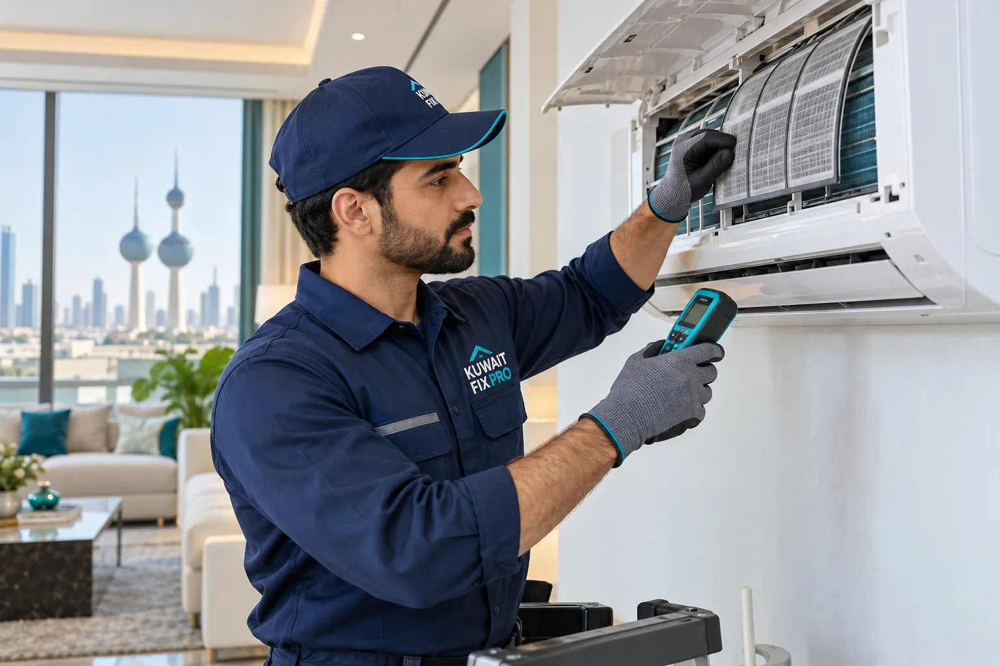

صيانة تكييف في الأحمدي
المكيف لا يبرد؟ نفحص العطل ونصلحه في الأحمدي
هل المكيف لا يبرد أو يتوقف؟ نفحص وحدات التكييف والتكييف المركزي، ونكشف التسريب ونتحقق من الحاجة لتعبئة الفريون. نوضح التكلفة قبل الإصلاح؛ لا نوفر التركيب أو الفك أو النقل.
تصليح بالمنزلمتاحون 24/7خدمة في نفس اليوم حسب التوفرتكلفة واضحة قبل العمل